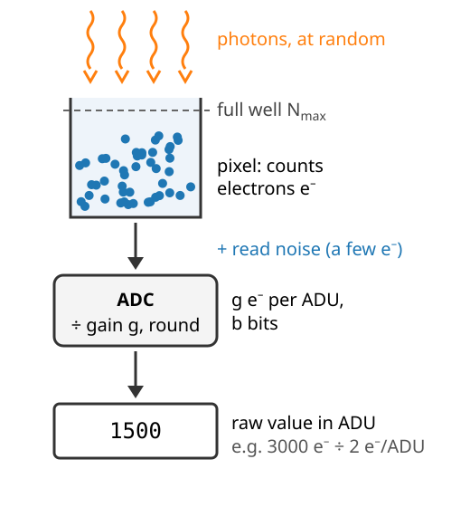
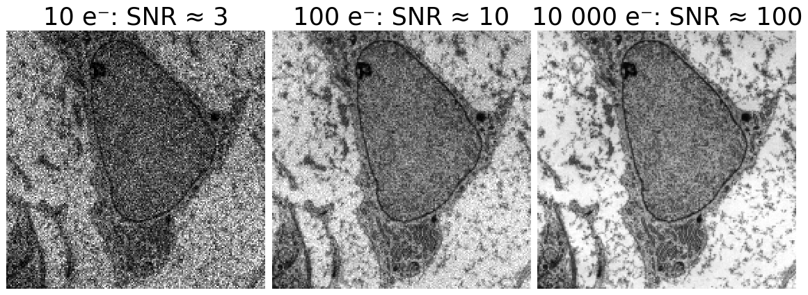
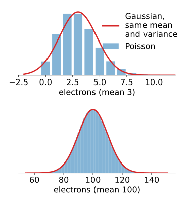
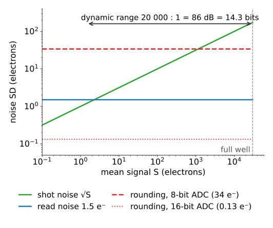

Where do the numbers in an image come from, and how much of them is noise?
A camera counts electrons: a full well, read noise, an ADC with b bits.
Light itself is noisy: shot noise grows as \sqrt N.
The usual noise model for the rest of the course: additive Gaussian noise of standard deviation \sigma_n, and when it is (and is not) right.
How many bits are worth storing: the dynamic range.
Measuring quality in decibels: SNR and PSNR.
Slides titled The math give the formulas and proofs; the ideas are complete without them.
Where the numbers come from
A camera pixel collects light as electrons (e^-), during the exposure:
Full well: a pixel holds at most N_\text{max} electrons (a few thousand to ~100 000). More light: the pixel saturates.
Read noise: the electronics add noise of a few e^- to every reading, even in the dark.
ADC (analogue-to-digital converter): turns the charge into a whole number of ADU (analogue-digital units), with b bits. The gaing says how many electrons one ADU is.
A raw pixel value is “electrons ÷ gain, rounded”.

Light itself is noisy: shot noise
Photons arrive at random. A pixel that collects on averageN electrons gets a count that varies from exposure to exposure by about \sqrt N (Poisson statistics):
mean signal N
100
10 000
noise \sqrt N
10
100
signal/noise
10
100

More light → the noise grows, but more slowly than the signal: 100× more light gives 10× better SNR.
The best SNR a pixel can ever reach is \sqrt{N_\text{max}}: for a full well of 30 000 e^-, about 173.
Averagingn frames is like collecting n times the light: the SNR improves by \sqrt n.
So the lowest bits of a bright pixel only record noise.
The math: Poisson counts
A count K of independent random arrivals with mean N is Poisson: P(K = k) = e^{-N}N^k/k!, with
\mathbb E[K] = N, \qquad \operatorname{Var}(K) = N, \qquad \text{SNR} = \frac{N}{\sqrt N} = \sqrt N.
The sum of n independent Poisson counts with mean N is Poisson with mean nN: averaging n frames gives mean N and SD \sqrt{N/n}, so the SNR is \sqrt{nN}.
For N \gtrsim 30 the Poisson distribution is close to a Gaussian with mean N and variance N: shot noise behaves like Gaussian noise whose variance equals the signal.
The usual noise model
Most methods in this course assume additive Gaussian noise:
\text{observed pixel} = \text{true value} + \text{noise}, \qquad \text{noise} \sim \mathcal N(0, \sigma_n^2), \text{ independent from pixel to pixel.}
It fits read noise well, and shot noise in a region of roughly constant brightness (then \sigma_n^2 \approx the mean signal in electrons).
It does not fit across an image with dark and bright parts: shot noise is signal-dependent (bright parts are noisier in absolute terms). At very low light the counts are small whole numbers, not a bell curve.
Saturated pixels have no noise at all, and are not measurements either.
Correlated noise (from demosaicing, compression, or a filter) breaks “independent from pixel to pixel”.

Try it: how many bits does a camera need?
How many bits are meaningful?
Dynamic range = full well ÷ read noise: the ratio between the brightest signal and the faintest one you can tell from zero. For 30 000 e^- and 1.5 e^-: 20 000 : 1, which is 86 dB, or 14.3 bits.
An ADC with fewer bits than that throws dark detail away (quantisation noise above the read noise).
An ADC with many more bits records noise very precisely: harmless, but the extra bits carry no information.
Rule of thumb: choose the gain so that one ADU is at most about one read-noise SD. Then the read noise works as a natural dither (quantisation unit).
Hence: scientific cameras use 12–16 bits; an 8-bit image of a dim sample may have lost exactly what you wanted to measure.

The math: adding the noise sources
Independent noise sources add in variance. At a mean signal of S electrons, with read noise \sigma_r and gain g:
Shot noise dominates when S > \sigma_r^2 (for \sigma_r = 1.5\,e^-: above about 2 electrons).
Quantisation is negligible when g/\sqrt{12} \ll \sigma_r; a full well N_\text{max} spread over 2^b - 1 levels gives g = N_\text{max}/(2^b - 1).
In decibels, amplitude ratios use 20\log_{10}: dynamic range = 20\log_{10}(N_\text{max}/\sigma_r), maximum SNR = 20\log_{10}\sqrt{N_\text{max}} = 10\log_{10}N_\text{max}.
In bits: \log_2(N_\text{max}/\sigma_r); one bit is 20\log_{10}2 \approx 6.02 dB.
Measuring noise: SNR and PSNR
SNR (signal-to-noise ratio) of a measurement: the signal divided by the noise SD, \ \text{SNR} = S/\sigma_n. In decibels: 20\log_{10}(S/\sigma_n).
400 electrons with pure shot noise: 400/20 = 20, or 26.0 dB. Halving the noise adds 6 dB.
PSNR (peak signal-to-noise ratio) compares a whole image with a reference (the clean image, or the original before compression or denoising):
Peak = the largest possible value: 255 for 8 bits, 2^b - 1 for b bits, 1 for images scaled to [0, 1]. Always state it.
An 8-bit image with Gaussian noise \sigma_n = 5 grey levels: MSE = 25, PSNR = 10\log_{10}(255^2/25) = 34.2 dB. Half the noise: 40.2 dB.
The same 12-bit image (noise 80 ADU) has PSNR 34.2 dB with peak 4095, but 58.3 dB if someone uses the 16-bit peak 65 535: 24 dB for nothing.
PSNR compares pixels one by one; it says nothing about where the errors are or whether they look like structure (the quantisation unit’s dithering example).
The math: decibels for SNR and PSNR
Decibels measure a power (variance) ratio P_1/P_2 as 10\log_{10}(P_1/P_2); for an amplitude (SD) ratio that is 20\log_{10}(A_1/A_2).
Averaging n frames divides the noise variance by n: +10\log_{10}n dB (+6.0 dB for 4 frames, +12.0 dB for 16).
Rounding to b bits on a [0, 2^b - 1] scale (step \Delta = 1) gives MSE = \Delta^2/12, so